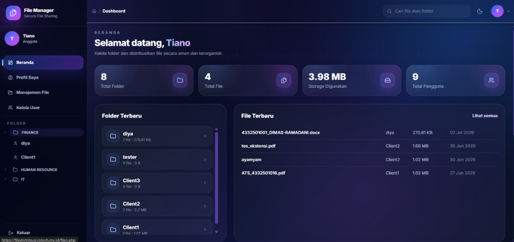

Secure File Manager Web App
Aplikasi web manajemen file berbasis PHP dengan integrasi monitoring SIEM, autentikasi Active Directory, dan enkripsi file. Dikerjakan bersama tim.
Lihat Repositori →Beberapa proyek dan praktikum yang pernah saya kerjakan di bidang keamanan siber dan pengembangan sistem.

Aplikasi web manajemen file berbasis PHP dengan integrasi monitoring SIEM, autentikasi Active Directory, dan enkripsi file. Dikerjakan bersama tim.
Lihat Repositori →